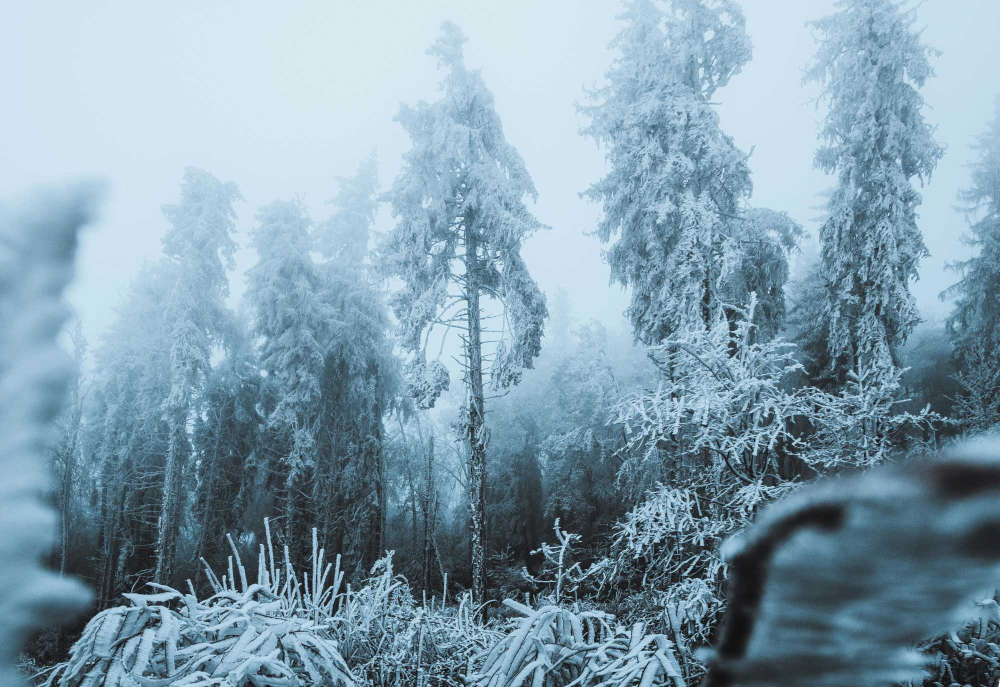

The Rime Ridge
As part of Prismatic Wasteland's Rankin/Bass-themed 2025 Merry Hexmas, I present the Rime Ridge, a dense mountain range thick with fog that tends to freeze into hard rime ice upon all surfaces. An icey mist covered mountain range inspired by the Misty Mountains of Rankin/Bass's films 1977 "The Hobbit" and 1964 "Rudolph's Shiny New Year".

The Rime Ridge jutting above the rime ridden mists.
Ecosystem and Ecology
Terrain and Biome
Dense mountain range thick with fog and covered in a Boreal forest where the pines are able to land to grow. Everything is rime covered.
Takes x3 typical travel time to travel through the Rime Ridge hex. Can take longer depending on the weather and whether you follow the typical trails and mountain passes.

The boreal forest on the mountside covered in rime.
Weather
1/10 chance the fog all froze over night leaving a rare clear morning only to be soon filled with fog come noon.
If there is no fog, treat any rolled Tusker encounters at this time as another Mountain Elemental encounter.
Wildlife
Caribou, mountain goats, rabbits, and squirrels all dwell in the boreal forest and dine on the vegetation. Wolves hunt these creatures.
Rumors of the Rime Ridge
Only a fool or one without a care for staying long in this mortal realm dares to traverse these mountains. All locals in the North Pole know this and there is ample signage surrounding the Rime Ridge that states this. The time to travel these mountains is long and the danger is great, which leads to few travelers.
Admist these mountains, there be monsters.
Random Encounters
Roll for which creatures are encountered on this journey.
1. Great Carrion Birds
These gargantuan birds can blot out the sun and send gusts of wind that uproot trees with a flap their wings. Treat these as Rocs.
Aeon & Alda-mót
There are at least always two great carrion birds named Aeon and Alda-mót. They continue their lineage and play an unknown but important role in the passage of time, along with Father Time and Happy, the baby new year. Their babies are few and smaller than they are yet still quite large birds. As a part of their nature, the baby birds are invisible until they fly from their nest.

"Huginn and Muninn" by Kim Holm, CC-BY 4.0.
2. Behemoth Bears
Huge grizzly bears with ferrocious claws and teeth. Most Behemoth Bears you meet are hungry or sleeping. They are extremely territorial and known to be quite hostile when provoked. They eat ceatures the size of Tuskers and smaller. They also are known to enjoy fruits and honey and a good back scratch.
Big Bear is a sentient Behmoth Bear that lives with his wife and their cub, who as a a young cub is the size of a regular grizzly bear. They stay within a cottage in one of the many valleys within the mountains. It is said that this Behemoth Bear family shelter the lost baby new year, Happy. Only one way to find out if that rumor is true!

"The Great Bear" by Kim Holm, CC-BY 4.0.
3. The Wind Elementals
- The Wind Demon Commander, who is really an elder Wind Elemental.
- Vagrant Wind
- Raging Wing
- Whispering Wind: The only wind elemental native to the Rime Ridge. This soft spoken wind does not tend to disturb the mists or the mountain elementals.
The excessive winds cause the fog to move about more, which results in more light for the evergreen vegetation which then grows well.
As elementals, they can be communicated with, especially through emotions, although once they have emotional momentum, it can be difficult to change their direction! There are some, especially elder elementals, that are more sentient and of a sound mind than just a whirlwind of emotions. While still emotional, they are easier to communicate with. As older elementals, they tend to be more powerful than the younger of their siblings.
4. Gorcs
The hob goblin orcs of Rankin/Bass's animated films "Hobbit" and "The Return of the King".
- Think brachycephalic cats and bull dog face meets stocky boar with sharp teeth and tusks.
- oinks, barks, and purrs
- They are similar to the thick and stocky moblins of "The Legend of Zelda".
- The Great Gorc rules Gorcington hidden within the Rime Ridge
- The Gorc-Bane Weapons: All burn in radiant fire in the presence of gorcs, and glow in the presence of orcs, goblins, and cats.
- Gorcrend: A Zweihander. with parierhaken
- Gorcrist: A hand and a half sword
- Beater: A mace
They eat Ramkin, Bassians, and smaller animals. They'll eat evergreen if forced to but cannot sustain themselves on this for long periods of time.

Gorcs are the Goblins from the Rankin/Bass 1977 animated film "The Hobbit".
5. Ramkin
Ramkin are muscular beastmen with the torso and arms of a gorilla, the head of a ram with curling horns, and the hind legs and hooves of a ram. Their forearms are much more wooly and end with larger hands than a human and have three fingers that end similarly to deer toes. These muscular hands end with fingers and knuckles covered in a thick keratin that cover the joints but let them bend inwards. These hands are good for both running, climbing, grasping, and certainly punching. A ramekin is always found among their belongings, even when travelling.
They primarily eat the evergreens and other vegetation. They are incredibly territorial and proud. If they believe they are being challenged, then they will charge head first at the challenger.
6. Tuskers
Huge tusked trolls dwell in these mountains.
- They thrive within the mists and caves of Rime Ridge where they avoid the sun which would turn them to stone
- On the rare clear mornings, they remain in their holes and sleep in.
Tuskers eat Gorcs and Ramkin and other smaller creatures.

Tuskers are the tusked Trolls from the Rankin/Bass 1977 film "The Hobbit".
7. Catragon
Rime Ridge has a feral catragon problem. Catragons eat creatures as big as Tuskers or smaller.
Güneş (Guenesh): A gargantuan female catragon.

Smaug Concept Art from the Rankin/Bass 1977 animated film "The Hobbit".
Catragons come in various sizes, with new borns being the size of a large cat. Elder catragons are known to be Gargantuan, though some say the can grow even larger. They have the behavior and mannerisms of a cat.

Smaug from the Rankin/Bass 1977 animated film "The Hobbit".
8. Mountain Elementals
Awakened from their long hibernation and frenzied by the inhabitants of Rime Ridge, the Mountain Elementals restlessly quake.
- They cause earthquakes as they twist and turn trying to go back to sleep.
- They'll smash the ground or pelt rocks at each other and passerbys out of irritation.
- They'll rise from the mist and travel to find a better sleeping spot within the Rime Ridge. A spot dense in still fog that keeps out the blinding sun.
They are awoken from their long slumber due to
- the invasive and irritating catragon overpopulation,
- the Tuskers and Gorcs having lost their tradition of respect for the mountains now dig in any mountain, including the mountain elementals.
- the noisy wind elementals who take away the sun blocking mists. These wind elementals were displaced from their home due to the Frenzied Frost rampaging among their northern mountain brothers who are in a steadfast sleep, now known as the Sleeping Slopes.
- There is a heat within Rime Ridge that warms their stone bones and makes it not only easier to move but provides a burning energy that encourages their restless rage.
Mountain elementals are colossal earth elementals that are the size of mountains. They are made of earth and rock and the rime covered boreal forest grows on them as it does the mountains they nestle with.


Locations within the Rime Ridge
The mountains are confusing on their own without the mists, and are even worse with them! The following are potential locations of interest that may be stumbled upon or seen from a distance in a brief clearing of the fog. They are within distance that one could journey to them if desired. Roll on this table for locations along with the encountered creatures.
1. Aeon's Nest
The nest of the terrible Aeon and his mate Alda-mót. It is said that if you trade something valuable, something shiny, you may get a pumparum in return! Whatever that is... Regardless, the rumor is believed and some brave the adventure to climb these mountains and give an offering of silver and gold in exchange for wisdom or granting their wish by terrible, but great, carrion birds.
2. Blind Man's Bluff

Blind Man's Bluff with fog pouring out into the Swrily Twirly Sea of Gumdrops.
3. Gorcington
The Gorc city under the mountains. As hidden as a Gorc settlement under a mountain of mist can be, which is to say you'll smell it before you see it!
The Great Gorc reigns over the gorcs of gorcington. They lead hunting parties in this hex and nearby hexes.
In the caves of Gorcington, the lower caverns feature an underground lake where Bassians are said to dwell. There is said to be a winding undergound stream that drains from this underground lake into a pond within the neighboring Vorpal Vale.
4. Rimecrest Keep
An ancient dwarf fortress seated atop the Rime Ridge, now occupied by Güneş and her catragons.
- Güneş dwells within purring atop a horde of silver and gold and other treasures.
- Underneath the slumbering Güneş is the Heart of Fire, a large ruby red gemstone that is hot to the touch. A catragon would find this warmth quite inviting!
- The Heart of Fire's pressence will energize nearby elementals and sometimes other ceatures, exciting them for better or worse. If the stone's energy is not used and it stays still for a while, then the elementals in the hex will eventually feel its heat and become energized.
If the Heart of Fire is removed from this hex, then the encountered Wind and Mountain Elementals in this hex will be less restless.
5. The Rime Ridge
The titular Rime Ridge is a mountain ridge that connects various mountains in the middle of this mountain range. Walking atop the snow covered ridge lets you see above the rime and fog.
Rime Ridge and its fabled fog at sunset.
6. Tusker Holes
Tuskers dig holes to hide in from the sunlight and to serve as home for themselves and their stolen treasures. There will be a noteworthy treasure in every Tusker hole, such as the Gorc-bane weapons. Roll 1d6. If a 1, add another notable treasure, such as another Gorc-bane weapon. Then, roll again accumulating the treasure rolled each time. If not a 1, then multiply that by 100 gold pieces and that is the value of the other treasure within the Tusker hole.
Neighboring Hexes
| Direction | Adjacent Hex Location |
|---|---|
| North | The Vorpal Vale |
| Northeast | The Autumn Valley |
| Northwest | The Chapel of the Green |
| Southeast | Ēostre Fields |
| Southwest | The Sea of Swirly Twirly Gumdrops |
| South | Jaw-Break Shore |